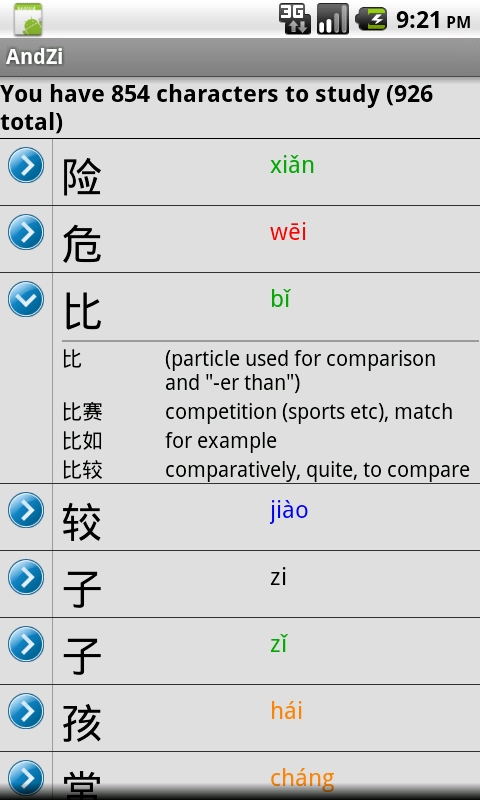

This screen gives you a list of the Chinese characters you would be tested on, either because they are new in your vocabulary list or because you may have forgot them since the last time you went through the test for those.
Clicking on the blue arrow on the left of the list will show you all the words containing that character. The top of the screen will give you the number of characters in this list. If you are currently using a filter for your lesson to study, it show you both the number with and without this filter.
